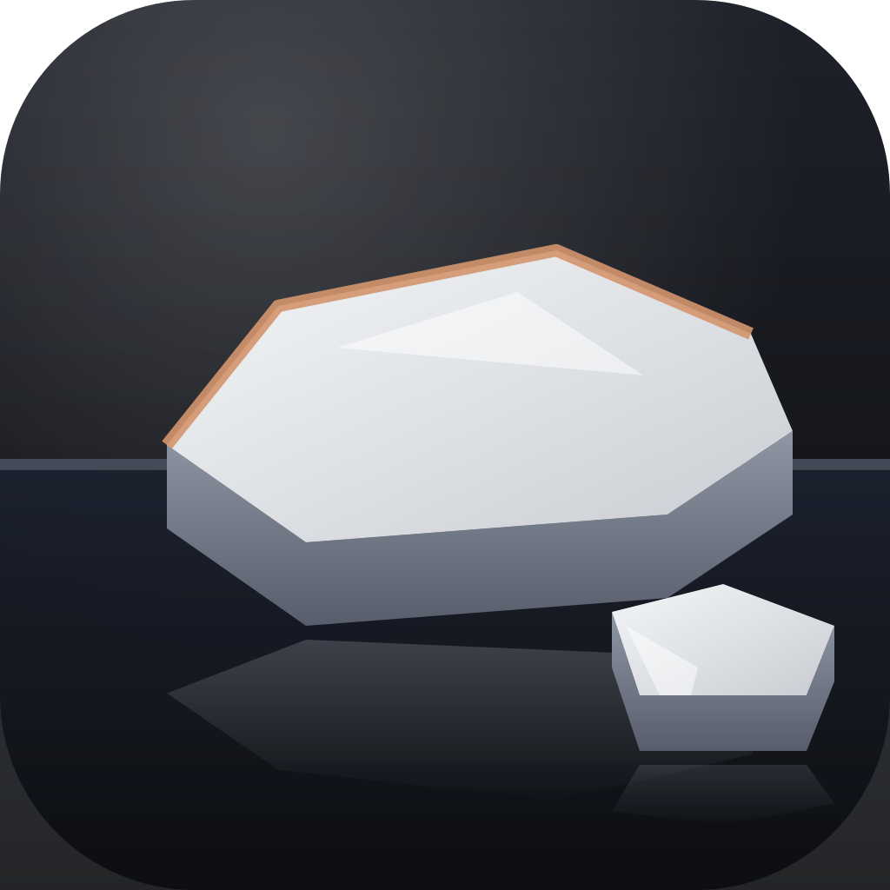

No floe. The mark is the app's own penguin head (the ring with the square beak corner and the eye, from PenguinHead.tsx) on the current icon's dark lit tile. Every variant changes one thing against H1.
PenguinHead.tsx
